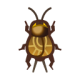
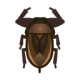
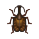
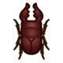
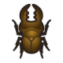
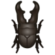
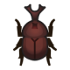
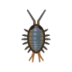
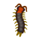

蟲圖鑑
月別圖鑑
| 名稱 | 價格 | 出沒地 | 出沒月份時間 |
|---|---|---|---|
白粉蝶 |
160 | 花/空中 | 北：1~6月、9~12月
南：3~12月
4~19時 |
斑緣點粉蝶 |
160 | 花/空中 | 北：3~6月、9~10月
南：3~4月、9~12月
4~19時 |
鳳蝶 |
240 | 花/空中 | 北：3~9月
南：1~3月、9~12月
4~19時 |
烏鴉鳳蝶 |
2500 | 花(黒/紫/青) | 北：3~6月
南：9~12月
4~19時 |
青帶鳳蝶 |
300 | 花/空中 | 北：3~6月
南：9~12月
4~19時 |
大白斑蝶 |
1000 | 花/空中 | 北：整年都有
南：整年都有
8~19時 |
大紫蛺蝶 |
3000 | 花/空中 | 北：5月~8月
南：1~2月、11~12月
4~19時 |
大樺斑蝶 |
140 | 花/空中 | 北：9~11月
南：3~5月
4~17時 |
大藍閃蝶 |
4000 | 花/空中 | 北：1~3月、6~8月、12月
南：1~3月、6~9月、12月
0~8時、17~24時 |
彩祆蛺蝶 |
3000 | 花/空中 | 北：4~9月
南：1~3月、10~12月
8~17時 |
紅頸鳳蝶 |
2500 | 花/空中 | 北：1~2月、4~9月、12月
南：1~3月、6~8月、12月
8~17時 |
亞歷山大鳳蝶 |
4000 | 花/空中 | 北：5~9月
南：1~3月、11~12月
8~16時 |

飛蛾 |
130 | 燈火附近 | 北：整年都有
南：整年都有
0~4時,19~24時 |
皇蛾 |
3000 | 樹幹上 | 北：4~9月
南：1~3月、10~12月
0~4時,19~24時 |
日落蛾 |
2500 | 空中 | 北：4~9月
南：1~3月、10~12月
8~16時 |
中華劍角蝗 |
200 | 地上 | 北：4~11月
南：1~5月、10~12月
8~19時 |
飛蝗 |
600 | 地上 | 北：8~11月
南：2~5月
8~19時 |
稻蝗 |
400 | 地上 | 北：8~11月
南：2~5月
8~19時 |
蚱蜢 |
160 | 地上 | 北：7~9月
南：1~3月
8~17時 |

蟋蟀 |
130 | 地上 | 北：9~11月
南：3~5月
0~8時,17~24時 |
鈴蟲 |
130 | 地上 | 北：9~11月
南：3~5月
0~8時,17~24時 |
螳螂 |
430 | 花上 | 北：3~11月
南：1~5月、9~12月
8~17時 |
蘭花螳螂 |
2400 | 花上 | 北：3~11月
南：1~5月、9~12月
8~17時 |
蜜蜂 |
200 | 花的附近 | 北：3~7月
南：1月、9~12月
8~17時 |
黃蜂 |
2500 | 樹上掉下來 | 北：整年都有
南：整年都有
任何時間 |
| 250 | 樹上(除了椰子和香蕉樹以外) | 北：7~8月
南：1~2月
8~17時 |
|
斑透翅蟬 |
300 | 樹上(除了椰子和香蕉樹以外) | 北：7~8月
南：1~2月
8~17時 |
熊蟬 |
500 | 樹上(除了椰子和香蕉樹以外) | 北：7~8月
南：1~2月
8~17時 |
寒蟬 |
400 | 樹上(除了椰子和香蕉樹以外) | 北：8~9月
南：2~3月
8~17時 |
暮蟬 |
550 | 樹上(除了椰子和香蕉樹以外) | 北：7~8月
南：1~2月
4~8時,16~19時 |
蟬蛻 |
10 | 樹上(除了椰子和香蕉樹以外) | 北：7~8月
南：1~2月
任何時間 |
紅蜻蜓 |
180 | 空中 | 北：9~10月
南：3~4月
8~19時 |
綠胸晏蜓 |
230 | 空中 | 北：4~10月
南：1~4月、10~12月
8~17時 |
無霸勾蜓 |
4500 | 空中 | 北：5~10月
南：1~4月、11~12月
8~17時 |
豆娘 |
500 | 空中(水邊) | 北：1~2月、11~12月
南：5~8月
任何時間 |
螢火蟲 |
300 | 水邊(淡水附近) | 北：6月
南：12月
0~4時,19~24時 |
螻蛄 |
500 | 地下(聽聲音挖掘) | 北：1~5月、11~12月
南：5~11月
任何時間 |
水黽 |
130 | 水面 | 北：5~9月
南：1~3月、11~12月
8~19時 |
龍蝨 |
800 | 水面 | 北：5~9月
南：1~3月、11~12月
8~19時 |

田鱉 |
2000 | 水面 | 北：4~8月
南：1~3月、10~12月
8~19時 |
椿象 |
120 | 花上 | 北：3~10月
南：1~4月、9~12月
任何時間 |
人面椿象 |
1000 | 花上 | 北：3~10月
南：1~4月、9~12月
0~8時,19~24時 |
瓢蟲 |
200 | 花上 | 北：3~6月、10月
南：4月、9~12月
8~17時 |
虎甲蟲 |
1500 | 地上 | 北：2~10月
南：1~4月、8~12月
任何時間 |
吉丁蟲 |
2400 | 樹樁上 | 北：4~8月
南：1~2月、10~12月
任何時間 |

提琴蟲 |
450 | 樹樁上 | 北：5~6月、9~11月
南：3~5月、11~12月
任何時間 |
星天牛 |
350 | 樹樁上 | 北：整年都有
南：整年都有
任何時間 |
琉璃星天牛 |
3000 | 樹樁上 | 北：5~9月
南：1~3月、12月
任何時間 |
寶石象鼻蟲 |
800 | 椰子樹 | 北：7~8月
南：1~2月
任何時間 |
蜣螂 |
3000 | 雪球附近 | 北：1~2月、12月
南：6~8月
任何時間 |
雪隱金龜 |
300 | 地上 | 北：7~9月
南：1~3月
任何時間 |
寶石金龜 |
10000 | 樹上 | 北：7~8月
南：1~2月
0~8時,23~24時 |
日銅鑼花金龜 |
200 | 樹上 | 北：6~8月
南：1~2月、12月
任何時間 |
歌利亞大角花金龜 |
8000 | 椰子樹 | 北：6~9月
南：1~3月、12月
0~8時,17~24時 |

鋸鍬形蟲 |
2000 | 樹上 | 北：7~8月
南：1~2月
任何時間 |

深山鍬形蟲 |
1000 | 樹上 | 北：7~8月
南：1~2月
任何時間 |
大鍬形蟲 |
10000 | 樹上 | 北：7~8月
南：1~2月
23~8時 |
彩虹鍬形蟲 |
6000 | 地上 | 北：6~9月
南：1~3月、12月
0~8,19~24時 |
細身赤鍬形蟲 |
8000 | 椰子樹 | 北：7~8月
南：1~2月
0~8時,17~24時 |
黃金鬼鍬形蟲 |
12000 | 椰子樹 | 北：7~8月
南：1~2月
0~8時,17~24時 |

長頸鹿鋸鍬形蟲 |
12000 | 椰子樹上 | 北：7~8月
南：1~2月
0~8時,17~24時 |

獨角仙 |
1350 | 樹上 | 北：7~8月
南：1~2月
0~8時,17~24時 |
高卡薩斯南洋大兜蟲 |
8000 | 椰子樹 | 北：7~8月
南：1~2月
0~8時,17~24時 |
象兜蟲 |
8000 | 椰子樹 | 北：7~8月
南：1~2月
0~8時,17~24時 |
長戟大兜蟲 |
12000 | 椰子樹 | 北：7~8月
南：1~2月
0~8時,17~24時 |
竹節蟲 |
600 | 樹 | 北：7~11月
南：1~5月
4~8時,17~19時 |
葉竹節蟲 |
600 | 擬態為葉片 | 北：7~9月
南：1~5月
4~8時,17~19時 |
蓑衣蟲 |
600 | 樹上掉下來 | 北：整年都有
南：整年都有
任何時間 |
螞蟻 |
80 | 地上(下雨,或腐爛大頭菜附近) | 北：整年都有
南：整年都有
任何時間 |
寄居蟹 |
1000 | 沙灘(擬態成貝殼) | 北：整年都有
南：整年都有
0~8時,19~24時 |

海蟑螂 |
200 | 海岸的岩石上 | 北：整年都有
南：整年都有
任何時間 |
蒼蠅 |
60 | 空中(腐爛的大頭菜或垃圾附近) | 北：整年都有
南：整年都有
任何時間 |

蚊子 |
130 | 空中（有嗡嗡聲,雨雪天除外） | 北：6~9月
南：1~3月、12月
0~4時,17~24時 |
跳蚤 |
70 | 居民身上 | 北：4~11月
南：1~5月、10~12月
任何時間 |
蝸牛 |
250 | 石頭上(下雨天,需注意會逃走) | 北：整年都有
南：整年都有
任何時間 |
鼠婦 |
250 | 敲石頭出現 | 北：1~6月、9~12月
南：3~12月
0~16時,23~24時 |

蜈蚣 |
300 | 敲石頭出現 | 北：1~6月、9~12月
南：3~12月
16~23時 |
蜘蛛 |
600 | 樹上掉下來 | 北：整年都有
南：整年都有
0~8時,19~24時 |
狼蛛 |
8000 | 地上 | 北：1~4月、11~12月
南：5~10月
0~4時,19~24時 |
蠍子 |
8000 | 地上 | 北：5~10月
南：1~4月、11~12月
0~4時,19~24時 |